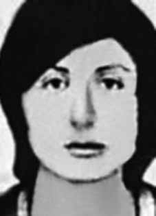

Pauline
Philipe
Reichstul
BIOGRAFIA
Pauline Reichstul nasceu em Praga, localizada hoje na República Tcheca, filha de judeus poloneses sobreviventes da Segunda Guerra Mundial. Com 18 meses, mudou-se com seus pais para Paris e, em 1955, aos oito anos, eles chegaram ao Brasil.
Mais tarde, passaram temporadas em Israel, França e Dinamarca, até fixarem residência na Suíça. Na Europa, Pauline manteve contato com militantes brasileiros e trabalhou para divulgar as violações de direitos humanos cometidas pelo regime militar. Voltou ao Brasil e entrou para a Vanguarda Popular Revolucionária (VPR), na qual também militava seu companheiro, Ladislau Dowbor, quem havia conhecido antes mesmo de ir para Israel.
Em janeiro de 1973, a militante foi assassinada brutalmente com outros cinco de seus companheiros da VPR, em Paulista, na Grande Recife (PE), num episódio conhecido como o Massacre da Chácara São Bento, considerado pelo jornalista Elio Gaspari, em “A ditadura escancarada”, “uma das maiores e mais cruéis chacinas da ditadura”.
As forças da repressão, chefiadas por Sérgio Fleury, teriam conseguido obter informações sobre a localização dos militantes graças aos serviços de Cabo Anselmo, militar que se infiltrou na VPR e, inclusive, mantinha uma relacionamento com Soledad Barrett Viedma, uma das vítimas da chacina que na ocasião estava grávida de um filho dele.
Segundo a versão oficial, os militantes foram mortos numa troca de tiros na chácara. Gaspari aponta, no entanto, que eles foram capturados, levados até a chácara e então teriam sido torturados e mortos. Foram encontrados 26 tiros nos corpos dos militantes, sendo 14 na região da cabeça. Outro agente repressor que teria participado do massacre é Carlos Alberto Augusto, codinome “Carlinhos Metralha”, que até recentemente era delegado na cidade de Itatiba (SP).
O irmão de Pauline, Henri Reichstul, que também foi militante da VPR, fundou um instituto com seu nome na cidade de Belo Horizonte com o dinheiro que recebeu da indenização concedida pelo Estado.
Pauline Reichstul was born in Prague, now located in the Czech Republic, to Polish Jewish survivors of the Second World War. At 18 months old, he moved with his parents to Paris and, in 1955, at the age of eight, they arrived in Brazil.
Later, they spent time in Israel, France and Denmark, until they settled in Switzerland. In Europe, Pauline maintained contact with Brazilian militants and worked to publicize human rights violations committed by the military regime. He returned to Brazil and joined the Popular Revolutionary Vanguard (VPR), in which his companion, Ladislau Dowbor, whom he had met even before going to Israel, was also a member of.
In January 1973, the activist was brutally murdered along with five other of her VPR companions, in Paulista, in Greater Recife (PE), in an episode known as the Chácara São Bento Massacre, considered by journalist Elio Gaspari, in “The Open Dictatorship”, “one of the biggest and most cruel massacres of the dictatorship”.
The repression forces, led by Sérgio Fleury, would have managed to obtain information about the location of the militants thanks to the services of Corporal Anselmo, a soldier who infiltrated the VPR and even maintained a relationship with Soledad Barrett Viedma, one of the victims of the massacre who at the time was pregnant with his child.
According to the official version, the militants were killed in an exchange of fire at the farm. Gaspari points out, however, that they were captured, taken to the farm and then tortured and killed. 26 gunshots were found in the bodies of the militants, 14 of which were in the head region. Another repressive agent who would have participated in the massacre is Carlos Alberto Augusto, codename “Carlinhos Metralha”, who until recently was a delegate in the city of Itatiba (SP).
Pauline's brother, Henri Reichstul, who was also a member of the VPR, founded an institute with his name in the city of Belo Horizonte with the money he received from the compensation granted by the State.
Pauline Reichstul nació en Praga, ahora ubicada en la República Checa, hija de judíos polacos sobrevivientes de la Segunda Guerra Mundial. A los 18 meses se mudó con sus padres a París y, en 1955, a los ocho años, llegaron a Brasil.
Posteriormente, pasaron un tiempo en Israel, Francia y Dinamarca, hasta establecerse en Suiza. En Europa, Pauline mantuvo contacto con militantes brasileños y trabajó para dar a conocer las violaciones de derechos humanos cometidas por el régimen militar. Regresó a Brasil y se unió a la Vanguardia Popular Revolucionaria (VPR), de la que también era miembro su compañero, Ladislau Dowbor, a quien había conocido incluso antes de ir a Israel.
En enero de 1973, la activista fue brutalmente asesinada junto con otros cinco compañeros de su VPR, en Paulista, en el Gran Recife (PE), en un episodio conocido como Masacre de Chácara São Bento, considerado por el periodista Elio Gaspari, en “La Dictadura Abierta”, “una de las mayores y más crueles masacres de la dictadura”.
Las fuerzas de represión, lideradas por Sérgio Fleury, habrían logrado obtener información sobre la ubicación de los militantes gracias a los servicios del cabo Anselmo, un militar que se infiltró en el VPR e incluso mantuvo una relación con Soledad Barrett Viedma, una de las víctimas de la masacre que en ese momento estaba embarazada de su hijo.
Según la versión oficial, los militantes murieron en un intercambio de disparos en la finca. Gaspari señala, sin embargo, que fueron capturados, llevados a la finca y luego torturados y asesinados. En los cuerpos de los militantes fueron encontrados 26 disparos, 14 de ellos en la región de la cabeza. Otro agente represivo que habría participado en la masacre es Carlos Alberto Augusto, alias “Carlinhos Metralha”, quien hasta hace poco era delegado en la ciudad de Itatiba (SP).
El hermano de Pauline, Henri Reichstul, que también era miembro del VPR, fundó un instituto que lleva su nombre en la ciudad de Belo Horizonte con el dinero que recibió de las indemnizaciones concedidas por el Estado.
CIRCUNSTÂNCIAS DA MORTE
Pauline foi morta, junto com outros cinco integrantes da VPR, entre os dias 8 e 9 de janeiro de 1973, no episódio conhecido como massacre da Chácara São Bento, em operação conduzida pela equipe do Delegado Sérgio Paranhos Fleury, do DOPS/SP, com a colaboração do ex-cabo José Anselmo dos Santos, que era dirigente da VPR e atuava como agente infiltrado.
O “Cabo” Anselmo era controlado por Fleury e suas ações eram acompanhadas por agentes do Estado, tendo contribuído com a captura e morte de vários militantes políticos. No momento em que Anselmo articulou a emboscada contra os seis integrantes da VPR, com o objetivo de desmantelar o movimento de guerrilha urbana no Nordeste do Brasil, já havia fortes suspeitas, dentro da organização, quanto à sua atuação como agente infiltrado.
A versão oficial, veiculada pela imprensa na época, registrava que os militantes tinham sido mortos durante um tiroteio travado com os agentes de segurança na Chácara São Bento. A partir de suposta delação de José Manoel da Silva, preso no dia 7 de janeiro, a polícia teria localizado o aparelho, onde seria realizado um congresso da VPR.
O Ofício no 002/75- GAB/CI/DPF, de 17 de março de 1975, encaminhado pelo diretor do Centro de Informações do Departamento de Polícia Federal ao chefe da Agência Central do SNI, relatou que os militantes foram mortos “[…] à bala quando do desbaratamento de um Congresso Terrorista em Recife/PE, no dia 08-01-73, no Município de Paulista no Loteamento São Bento […]”. Pouco tempo depois do ocorrido, integrantes da VPR questionaram a versão divulgada e, em fevereiro de 1973, publicaram no Chile um pronunciamento no jornal Campanha, no qual afirmavam que a “Vanguarda Popular Revolucionária do Brasil não realizou tal congresso, que tal informação é um pretexto mentiroso para justificar o assassinato desses seis (6) lutadores da causa anti-fascista”.
Na mesma declaração, responsabilizaram o “Cabo” Anselmo pela delação dos militantes de Pernambuco. Os órgãos de segurança registraram o pronunciamento da VPR na Informação nº 217/DIS-COMZAE-4 do DEOPS/SP e a encaminharam à Divisão de Informações de Segurança da 4ª Zona Aérea da Aeronáutica. Não obstante, a versão oficial foi mantida pelos Relatórios das FFAA enviados ao então Ministro da Justiça, Maurício Correa, em dezembro de 1993. Sobre Pauline, consta no Relatório da Marinha que “foi morta em Paulista/PE, em 8/1/73, ao reagir a tiros à ordem de prisão dada pelos agentes de segurança”.
As investigações realizadas pela CEMDP, pela CEMVDHC e pela CNV comprovaram que não houve tiroteio, que os militantes foram capturados em lugares e ocasiões diferentes e mortos sob tortura, de modo que o tiroteio foi somente uma encenação para justificar as mortes. Um primeiro indício da falsidade da versão oficial pode ser extraído do Exame de Perícia em Local de Ocorrência, elaborado em 9 de janeiro de 1973 pelo Instituto de Polícia Técnica, uma vez que não faz menção a marcas de projéteis nos cômodos em que foram encontradas as vítimas, com exceção da cozinha que, segundo consta no exame, “apresentava vários orifícios produzidas por projéteis de arma de fogo”.
Não se sustenta, tampouco, a ideia de que o aparelho foi localizado a partir de delação de José Manoel. A operação de captura dos militantes pelos órgãos de segurança, sob o comando de Fleury, foi possível graças à atuação de “Cabo” Anselmo como agente duplo. Essa atuação é comprovada pelo “Relatório de Paquera” produzido pelo “Cabo” Anselmo e enviado ao DOPS/SP, em que relatava a rearticulação da VPR no Nordeste e o contato que estabeleceu com as vítimas antes da chacina, demonstrando a estreita vigilância policial a que estavam submetidos os militantes.
O relato de testemunhas confirma que os militantes tinham sido presos antes da chacina. Em depoimento prestado para a CEMVDHC, Jorge Barrett Viedma, irmão da Soledad e, na época, simpatizante da VPR, narrou que Pauline e Eudaldo dormiram no “aparelho” de Anselmo no dia 7/1 e que, na manhã do dia seguinte, todos saíram para o centro de Recife em carro dirigido por Anselmo, sendo que Pauline e Soledad foram deixadas na boutique de Sonja Maria Cavalcanti de França Lócio, em Boa Viagem.
Sonja Cavalcanti, proprietária da boutique Chica Boa, declarou à CEMDP, em 1996, que Pauline e Soledad foram capturadas em sua boutique por cinco homens que se diziam policiais e estavam em um carro do INCRA (Instituto Nacional de Colonização e Reforma Agrária). Sonja relatou que a ação foi muito violenta, que os homens espancaram Pauline, acertando-a até com coronhadas, e que as duas mulheres foram levadas amarradas.
Sonja também prestou depoimento à CEMVDHC, no qual reconheceu o Delegado Sérgio Paranhos Fleury como um dos responsáveis pela captura de Soledad e Pauline em sua boutique. No mesmo dia em que elas foram capturadas, foram efetuadas as prisões de Eudaldo, de Jorge Barrett e sua esposa.
Jorge Barrett relatou para a CEMVDHC que Fleury também participou da sua detenção. Houve, portanto, uma ação coordenada que resultou nas prisões, indicando que ao menos duas equipes atuaram na operação de cerco aos militantes. Ainda com relação à autoria, em depoimento prestado para a CNV em 30/10/2012, o ex-sargento do Exército Marival Chaves afirmou que, além do informante Anselmo e do Delegado Fleury, a operação que resultou na prisão e morte do grupo da VPR contou com a participação, pelo CIE, de José Brant Teixeira, Paulo Malhães, Félix Freire Dias e Rubens Gomes Carneiro (o Laecato). Também informou que a operação foi paga com recursos do CIE, com verbas descaracterizadas.
Outro depoimento relevante foi prestado em 1996, à CEMDP, pela advogada Mércia de Albuquerque Ferreira, que teve acesso aos corpos das vítimas no necrotério. A advogada relatou que “todos os corpos estavam muito estragados, marcas de pancadas, cortes e que me impressionou foi porque aqueles corpos estavam desnudados e todos os corpos estavam inchados”. Em particular, sobre a situação do corpo de Pauline, descreveu a advogada: […] estava também deitada numa mesa a Pauline, eu então cobri com uma toalha que tinha na entrada do necrotério, uma toalha de mão mas era grande eu botei por cima do corpo dela.
Pauline tinha a boca arrebentada, tinha marcas pela testa, pela cabeça e o corpo muito marcado […]. Ainda sobre as marcas no corpo de Pauline, o Laudo de Perícia em Local de Ocorrência registrou: “O corpo apresentava as seguintes lesões, todas características das produzidas por projétil de arma de fogo: quatro na cabeça, sendo uma na região occipital, uma na região frontal, uma na região mentoniana, e uma na região parietal esquerda”, que caracterizam execuções de pessoas indefesas.
Além disso, tanto o laudo da Inspeção Médico-legal de corpo quanto o laudo da Perícia Tanatoscópia descreveram: “escoriações e equimoses violáceas, generalizadas”, que são lesões próprias de vítimas de violência e tortura, e não de tiroteio, como havia concluído o Relatório da Morte de Pauline Reichstul anexado pela Comissão dos Familiares de Mortos e Desaparecidos ao processo da CEMDP.
Embora os órgãos de segurança soubessem a identidade de Pauline, ela foi considerada desconhecida e sepultada como indigente no Cemitério da Várzea, em Recife. Em 12 de janeiro de 1973, o diretor da Seção Administrativa do Departamento de Ordem Social/PE autorizou a exumação e o traslado do corpo para São Paulo. A família sepultou o corpo de Pauline no Cemitério Israelita/PE. A CEMVDHC está realizando investigações sobre o local em que foram mortos os militantes da VPR, com apoio do testemunho e da colaboração de Jorge Barrett.
As investigações ainda estão em curso, mas levantam indícios no sentido de que os militantes teriam sido mortos sob tortura em aparelho situado em Abreu e Lima e identificado pelos integrantes da VPR como Sítio São Bento, e não no local indicado como a Granja São Bento, localizado em Paulista, que corresponde ao lugar tradicionalmente apontado como cenário das mortes. Segundo depoimento prestado por Jorge Barrett à CEMVDHC, havia um equipamento de recuo da VPR em Abreu e Lima, onde viviam Pauline e Eudaldo.
Este aparelho era chamado pelos membros da organização de Sítio São Bento e deveria funcionar como um local para receber pessoas que estivessem em perigo de vida e para, eventualmente, levar futuros sequestrados. Em razão da suspeita de identificação do local pela repressão, Pauline e Eudaldo teriam ido para outro equipamento situado em Rio Doce, onde era o aparelho de Soledad e de “Cabo” Anselmo. A partir dessas informações, a CEMVDHC tem trabalhado com a possibilidade, ainda não confirmada, de o aparelho em Abreu e Lima ter sido o local das mortes.
No depoimento prestado, Jorge Barrett sugere que a Granja São Bento, apontada oficialmente como local da chacina, teria sido utilizada pela repressão para a encenação das mortes, mas não corresponderia ao aparelho mantido pela VPR. Essa hipótese ganhou força após um trabalho de reconhecimento feito pela CEMVDHC em parceria com Jorge Barrett, que conseguiu identificar o local do Sítio São Bento. Testemunhos colhidos de moradores da região reforçam essa hipótese, uma vez que eles se recordam do local como “Sítio dos Cabeludos” e relatam ter presenciado os militantes levados amarrados, bem como os corpos retirados em redes.
No momento em que a CNV encerra as suas atividades, encontra-se em andamento um trabalho pericial realizado pela polícia científica de Pernambuco para avançar na identificação do local em confronto com os laudos e fotografias da época.
Portanto, os resultados parciais das investigações conduzidas pela CEMVDHC apresentam indícios que apontam para a possibilidade de os militantes terem sido capturados em locais e momentos distintos e levados ao equipamento de recuo da VPR situado em Abreu e Lima, chamado Sítio São Bento, possivelmente para fazer o reconhecimento do local, onde teriam sido torturados e mortos, inclusive Evaldo que, pela versão oficial, teria fugido e, no dia seguinte, localizado e morto em Olinda.
Pauline was killed, along with five other members of the VPR, between the 8th and 9th of January 1973, in the episode known as the Chácara São Bento massacre, in an operation conducted by the team of Delegate Sérgio Paranhos Fleury, from DOPS/SP, with the collaboration of former corporal José Anselmo dos Santos, who was a leader of the VPR and acted as an undercover agent.
“Corporal” Anselmo was controlled by Fleury and his actions were monitored by State agents, having contributed to the capture and death of several political activists. At the time Anselmo organized the ambush against the six members of the VPR, with the aim of dismantling the urban guerrilla movement in the Northeast of Brazil, there were already strong suspicions within the organization regarding his role as an infiltrated agent.
The official version, published by the press at the time, recorded that the militants had been killed during a shootout with security agents at Chácara São Bento. Based on an alleged statement from José Manoel da Silva, arrested on January 7th, the police allegedly located the device, where a VPR congress was to be held.
Letter no. 002/75- GAB/CI/DPF, dated March 17, 1975, sent by the director of the Information Center of the Federal Police Department to the head of the SNI Central Agency, reported that the militants were killed “[…] by gunshot during the disruption of a Terrorist Congress in Recife/PE, on 01/08/73, in the Municipality of Paulista in the São Bento Subdivision […]”. Shortly after the incident, members of the VPR questioned the published version and, in February 1973, published a statement in Chile in the newspaper Campanha, in which they stated that the “Vanguarda Popular Revolucionária do Brasil did not hold such a congress, that such information is a false pretext to justify the murder of these six (6) fighters for the anti-fascist cause”.
In the same statement, they held “Corporal” Anselmo responsible for the denunciation of the Pernambuco militants. The security bodies recorded the VPR's statement in Information nº 217/DIS-COMZAE-4 of the DEOPS/SP and forwarded it to the Security Information Division of the 4th Air Zone of the Aeronautics. However, the official version was maintained by the FFAA Reports sent to the then Minister of Justice, Maurício Correa, in December 1993. Regarding Pauline, it is stated in the Navy Report that “she was killed in Paulista/PE, on 1/8/73, when reacting with gunfire to the arrest order given by security agents”.
The investigations carried out by CEMDP, CEMVDHC and CNV proved that there was no shooting, that the militants were captured in different places and occasions and died under torture, so that the shooting was just an act to justify the deaths. A first indication of the falsity of the official version can be extracted from the Examination of Expertise at the Place of Occurrence, prepared on January 9, 1973 by the Technical Police Institute, since it makes no mention of bullet marks in the rooms where the victims were found, with the exception of the kitchen which, according to the examination, “presented several holes produced by firearm projectiles”.
The idea that the device was located based on José Manoel's statement is not supported either. The operation to capture the militants by the security agencies, under the command of Fleury, was possible thanks to the role of “Corporal” Anselmo as a double agent. This action is proven by the “Flirting Report” produced by “Corporal” Anselmo and sent to the DOPS/SP, in which he reported the rearticulation of the VPR in the Northeast and the contact it established with the victims before the massacre, demonstrating the close police surveillance to which the militants were subjected.
Witness reports confirm that the militants had been arrested before the massacre. In a statement given to CEMVDHC, Jorge Barrett Viedma, Soledad's brother and, at the time, a VPR sympathizer, narrated that Pauline and Eudaldo slept in Anselmo's “device” on 1/7 and that, on the morning of the following day, everyone left for the center of Recife in a car driven by Anselmo, with Pauline and Soledad being left at the boutique owned by Sonja Maria Cavalcanti de França Lócio, in Boa Travel.
Sonja Cavalcanti, owner of the Chica Boa boutique, told CEMDP in 1996 that Pauline and Soledad were captured in her boutique by five men who said they were police officers and were in an INCRA (National Institute of Colonization and Agrarian Reform) car. Sonja reported that the action was very violent, that the men beat Pauline, even hitting her with butts, and that the two women were taken away tied up.
Sonja also gave a statement to CEMVDHC, in which she recognized Deputy Sérgio Paranhos Fleury as one of those responsible for capturing Soledad and Pauline in her boutique. On the same day they were captured, Eudaldo, Jorge Barrett and his wife were arrested.
Jorge Barrett reported to CEMVDHC that Fleury also participated in his arrest. There was, therefore, a coordinated action that resulted in the arrests, indicating that at least two teams were involved in the operation to surround the militants. Still regarding authorship, in a statement given to the CNV on 10/30/2012, former Army sergeant Marival Chaves stated that, in addition to the informant Anselmo and Delegate Fleury, the operation that resulted in the arrest and death of the VPR group included the participation, by the CIE, of José Brant Teixeira, Paulo Malhães, Félix Freire Dias and Rubens Gomes Carneiro (Laecato). He also reported that the operation was paid for with CIE resources, with uncharacterized funds.
Another relevant testimony was given in 1996, to CEMDP, by lawyer Mércia de Albuquerque Ferreira, who had access to the bodies of the victims in the morgue. The lawyer reported that “all the bodies were very damaged, there were marks from blows, cuts and what impressed me was because those bodies were naked and all the bodies were swollen”. In particular, regarding the situation of Pauline's body, the lawyer described: [...] Pauline was also lying on a table, I then covered her with a towel that was at the entrance to the morgue, a hand towel but it was large and I placed it over her body.
Pauline had a busted mouth, marks on her forehead, head and very marked body […]. Still regarding the marks on Pauline's body, the Expert Report at the Place of Occurrence recorded: “The body presented the following injuries, all characteristic of those produced by a firearm projectile: four in the head, one in the occipital region, one in the frontal region, one in the mental region, and one in the left parietal region”, which characterize executions of defenseless people.
Furthermore, both the report from the Medico-legal Inspection of the body and the report from the Thanatoscopy Expertise described: “generalized violaceous abrasions and bruises”, which are injuries typical of victims of violence and torture, and not of shooting, as concluded in the Report on the Death of Pauline Reichstul attached by the Commission of Relatives of the Dead and Missing to the CEMDP process.
Although security agencies knew Pauline's identity, she was considered unknown and buried as a pauper in the Várzea Cemetery, in Recife. On January 12, 1973, the director of the Administrative Section of the Department of Social Order/PE authorized the exhumation and transfer of the body to São Paulo. The family buried Pauline's body in the Israelite Cemetery/PE. CEMVDHC is carrying out investigations into the place where the VPR militants were killed, with the support of the testimony and collaboration of Jorge Barrett.
The investigations are still ongoing, but they raise signs that the militants were killed under torture in a device located in Abreu e Lima and identified by VPR members as Sítio São Bento, and not in the location indicated as Granja São Bento, located in Paulista, which corresponds to the place traditionally identified as the scene of the deaths. According to a statement given by Jorge Barrett to CEMVDHC, there was VPR retreat equipment in Abreu e Lima, where Pauline and Eudaldo lived.
This device was called Sítio São Bento by members of the organization and was supposed to function as a place to receive people who were in danger of their lives and to, eventually, take future kidnapped people. Due to the suspected identification of the location by the repression, Pauline and Eudaldo would have gone to another equipment located in Rio Doce, where Soledad and “Cabo” Anselmo's equipment was. Based on this information, CEMVDHC has been working with the possibility, not yet confirmed, that the device in Abreu e Lima was the location of the deaths.
In the statement given, Jorge Barrett suggests that Granja São Bento, officially identified as the location of the massacre, would have been used by repression to stage the deaths, but would not correspond to the apparatus maintained by the VPR. This hypothesis gained strength after reconnaissance work carried out by CEMVDHC in partnership with Jorge Barrett, who managed to identify the location of Sítio São Bento. Testimonies collected from residents of the region reinforce this hypothesis, since they remember the place as “Sítio dos Cabeludos” and report having witnessed the militants taken tied up, as well as the bodies removed in nets.
At the time that the CNV closes its activities, expert work is underway by the scientific police of Pernambuco to advance the identification of the location in comparison with reports and photographs from the time.
Therefore, the partial results of the investigations conducted by CEMVDHC present evidence that points to the possibility that the militants were captured in different places and times and taken to the VPR retreat equipment located in Abreu e Lima, called Sítio São Bento, possibly to reconnoitre the place, where they were tortured and killed, including Evaldo who, according to the official version, would have fled and, the following day, located and killed in Olinda.
Pauline fue asesinada, junto con otros cinco miembros del VPR, entre el 8 y el 9 de enero de 1973, en el episodio conocido como masacre de Chácara São Bento, en una operación realizada por el equipo del delegado Sérgio Paranhos Fleury, del DOPS/SP, con la colaboración del ex cabo José Anselmo dos Santos, que era dirigente del VPR y actuaba como agente encubierto.
El “cabo” Anselmo estaba controlado por Fleury y sus acciones eran monitoreadas por agentes del Estado, habiendo contribuido a la captura y muerte de varios activistas políticos. Cuando Anselmo organizó la emboscada contra los seis miembros del VPR, con el objetivo de desmantelar la guerrilla urbana en el Nordeste de Brasil, ya existían fuertes sospechas dentro de la organización sobre su papel como agente infiltrado.
La versión oficial, publicada por la prensa de la época, registraba que los militantes habían sido asesinados durante un tiroteo con agentes de seguridad en Chácara São Bento. Con base en una supuesta declaración de José Manoel da Silva, detenido el 7 de enero, la policía habría localizado el dispositivo, donde se iba a realizar un congreso de la VPR.
Carta no. 002/75- GAB/CI/DPF, de 17 de marzo de 1975, enviado por el director del Centro de Información del Departamento de la Policía Federal al jefe de la Agencia Central SNI, informó que los militantes fueron asesinados “[…] por disparos de arma de fuego durante la irrupción de un Congreso Terrorista en Recife/PE, el 08/01/73, en el Municipio de Paulista en el Barrio São Bento […]”. Poco después del incidente, miembros del VPR cuestionaron la versión publicada y, en febrero de 1973, publicaron en Chile un comunicado en el diario Campanha, en el que afirmaban que la “Vanguarda Popular Revolucionária do Brasil no celebró tal congreso, que tal información es un pretexto falso para justificar el asesinato de estos seis (6) luchadores por la causa antifascista”.
En el mismo comunicado responsabilizaron al “cabo” Anselmo por la denuncia de los militantes pernambucanos. Los cuerpos de seguridad registraron la declaración del VPR en el Informe nº 217/DIS-COMZAE-4 del DEOPS/SP y lo remitieron a la División de Información de Seguridad de la 4ª Zona Aérea de la Aeronáutica. Sin embargo, la versión oficial fue mantenida por los Informes de las FFAA enviados al entonces Ministro de Justicia, Maurício Correa, en diciembre de 1993. Respecto a Pauline, se afirma en el Informe de la Marina que “fue asesinada en Paulista/PE, el 8/01/73, al reaccionar a balazos a la orden de arresto dada por agentes de seguridad”.
Las investigaciones realizadas por el CEMDP, el CEMVDHC y la CNV comprobaron que no hubo disparos, que los militantes fueron capturados en diferentes lugares y ocasiones y murieron bajo tortura, por lo que el disparo fue sólo un acto para justificar las muertes. Un primer indicio de la falsedad de la versión oficial se puede extraer del Examen de Peritaje en el Lugar del Suceso, elaborado el 9 de enero de 1973 por el Instituto Técnico de Policía, ya que no hace mención de huellas de bala en las habitaciones donde fueron encontradas las víctimas, con excepción de la cocina que, según el examen, “presentaba varios orificios producidos por proyectiles de arma de fuego”.
Tampoco se sustenta la idea de que el dispositivo fue localizado a partir de la declaración de José Manoel. La operación de captura de los militantes por parte de los organismos de seguridad, al mando de Fleury, fue posible gracias al papel del “cabo” Anselmo como agente doble. Esta acción está probada por el “Informe de Coqueteo” elaborado por el “Cabo” Anselmo y enviado al DOPS/SP, en el que relató la rearticulación del VPR en el Nordeste y el contacto que estableció con las víctimas antes de la masacre, demostrando la estrecha vigilancia policial a la que fueron sometidos los militantes.
Los informes de los testigos confirman que los militantes habían sido arrestados antes de la masacre. En declaración dada al CEMVDHC, Jorge Barrett Viedma, hermano de Soledad y, en ese momento, simpatizante del VPR, narró que Pauline y Eudaldo durmieron en el “dispositivo” de Anselmo el día 7 de enero y que, en la mañana del día siguiente, todos partieron hacia el centro de Recife en un auto conducido por Anselmo, quedando Pauline y Soledad en la boutique de Sonja Maria Cavalcanti. de França Lócio, en Boa Travel.
Sonja Cavalcanti, propietaria de la boutique Chica Boa, dijo al CEMDP en 1996 que Pauline y Soledad fueron capturadas en su boutique por cinco hombres que dijeron ser policías y estaban en un automóvil del INCRA (Instituto Nacional de Colonización y Reforma Agraria). Sonja denunció que la acción fue muy violenta, que los hombres golpearon a Pauline, incluso a culazos, y que las dos mujeres se las llevaron atadas.
Sonja también brindó una declaración al CEMVDHC, en la que reconoció al diputado Sérgio Paranhos Fleury como uno de los responsables de capturar a Soledad y Pauline en su boutique. El mismo día de su captura fueron detenidos Eudaldo, Jorge Barrett y su esposa.
Jorge Barrett informó al CEMVDHC que Fleury también participó en su detención. Hubo, por tanto, una acción coordinada que se saldó con las detenciones, lo que indica que al menos dos equipos estaban involucrados en el operativo para cercar a los militantes. Aún en cuanto a la autoría, en declaración dada a la CNV el 30/10/2012, el ex sargento del Ejército Marival Chaves afirmó que, además del informante Anselmo y del delegado Fleury, la operación que resultó en la detención y muerte del grupo VPR contó con la participación, por parte del CIE, de José Brant Teixeira, Paulo Malhães, Félix Freire Dias y Rubens Gomes Carneiro (Laecato). También informó que la operación fue costeada con recursos del CIE, con fondos no caracterizados.
Otro testimonio relevante fue brindado en 1996, al CEMDP, por la abogada Mércia de Albuquerque Ferreira, quien tuvo acceso a los cuerpos de las víctimas en la morgue. El abogado informó que “todos los cuerpos estaban muy dañados, había marcas de golpes, cortes y lo que me impresionó fue porque esos cuerpos estaban desnudos y todos los cuerpos estaban hinchados”. En particular, sobre la situación del cuerpo de Pauline, el abogado describió: [...] Pauline también estaba recostada sobre una mesa, entonces la cubrí con una toalla que estaba en la entrada de la morgue, una toalla de mano pero era grande y se la coloqué sobre su cuerpo.
Paulina tenía la boca rota, marcas en la frente, cabeza y cuerpo muy marcados […]. Aún en cuanto a las marcas en el cuerpo de Paulina, el informe pericial en el lugar del suceso registró: “El cuerpo presentaba las siguientes lesiones, todas características de las producidas por proyectil de arma de fuego: cuatro en la cabeza, una en la región occipital, una en la región frontal, una en la región mental y una en la región parietal izquierda”, que caracterizan las ejecuciones de personas indefensas.
Además, tanto el informe de la Inspección Médico Legal del cadáver como el informe del Peritaje de Tanatoscopia describieron: “abrasiones y contusiones violáceas generalizadas”, que son lesiones propias de víctimas de violencia y tortura, y no de disparos, según se concluye en el Informe sobre la Muerte de Pauline Reichstul adjunto por la Comisión de Familiares de Muertos y Desaparecidos al proceso del CEMDP.
Aunque los organismos de seguridad conocían la identidad de Pauline, fue considerada desconocida y enterrada como indigente en el cementerio de Várzea, en Recife. El 12 de enero de 1973, el director de la Sección Administrativa del Departamento de Orden Social/PE autorizó la exhumación y traslado del cuerpo a São Paulo. La familia enterró el cuerpo de Pauline en el Cementerio Israelita/PE. El CEMVDHC realiza investigaciones en el lugar donde fueron asesinados los militantes del VPR, con el apoyo del testimonio y la colaboración de Jorge Barrett.
Las investigaciones aún están en curso, pero arrojan indicios de que los militantes fueron asesinados bajo tortura en un dispositivo ubicado en Abreu e Lima e identificado por miembros del VPR como Sítio São Bento, y no en el lugar indicado como Granja São Bento, ubicada en Paulista, que corresponde al lugar tradicionalmente identificado como el escenario de las muertes. Según declaración de Jorge Barrett al CEMVDHC, había equipos de retiro de VPR en Abreu e Lima, donde vivían Pauline y Eudaldo.
Este dispositivo fue denominado Sítio São Bento por miembros de la organización y debía funcionar como un lugar para recibir a personas que estuvieran en peligro de muerte y, eventualmente, acoger a futuros secuestrados. Debido a la sospecha de identificación del lugar por parte de la represión, Pauline y Eudaldo se habrían dirigido a otro equipo ubicado en Rio Doce, donde estaba el equipo de Soledad y “Cabo” Anselmo. Con base en esta información, el CEMVDHC viene trabajando con la posibilidad, aún no confirmada, de que el artefacto en Abreu e Lima fuera el lugar de las muertes.
En su declaración, Jorge Barrett sugiere que la Granja São Bento, oficialmente identificada como el lugar de la masacre, habría sido utilizada por la represión para escenificar las muertes, pero no correspondería al aparato mantenido por el VPR. Esta hipótesis cobró fuerza después de un trabajo de reconocimiento realizado por el CEMVDHC en colaboración con Jorge Barrett, que logró identificar la ubicación del Sítio São Bento. Testimonios recogidos de vecinos de la región refuerzan esta hipótesis, ya que recuerdan el lugar como “Sítio dos Cabeludos” y relatan haber presenciado a los militantes llevados atados, así como los cuerpos retirados en redes.
En el momento en que la CNV cierra sus actividades, la policía científica de Pernambuco realiza peritajes para avanzar en la identificación del lugar en comparación con informes y fotografías de la época.
Por lo tanto, los resultados parciales de las investigaciones realizadas por el CEMVDHC presentan evidencias que apuntan a la posibilidad de que los militantes fueron capturados en diferentes lugares y tiempos y conducidos al equipo de retiro de la VPR ubicado en Abreu e Lima, llamado Sítio São Bento, posiblemente para reconocer el lugar donde fueron torturados y asesinados, incluido Evaldo que, según la versión oficial, habría huido y, al día siguiente, localizado y asesinado en Olinda.